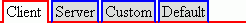

Version 3.0.0
TabSet |
||||||||||||||||||||||||||||||||||||||||
|
Developer’s Guide Home
Installation and Configuration Common Concepts Components Index Border Layout Panel Calendar Chart Command Button Command Link Composite Filter Confirmation Data Table Date Chooser Day Table Drop Down Field Dynamic Image Folding Panel For Each Graphic Text Hint Label Input Text Input Textarea Layered Pane Level Indicator Popup Layer Popup Menu Select Boolean Checkbox Select Many Checkbox Select One Radio Spinner Suggestion Field Tabbed Pane Tab Set Tree Table Two List Selection Window Focus Load Bundle Scroll Position Ajax Framework Validation Framework Tag Reference API Reference |
Key Features
Specifying the TabsTo add the TabSet component to a page, use the <o:tabSet> tag. There are two ways of specifying the tabs for the TabSet component:
The following example shows a four-tab TabSet component: <o:tabSet>
<o:tabSetItem>
<h:outputText value="Client" />
</o:tabSetItem>
<o:tabSetItem>
<h:outputText value="Server" />
</o:tabSetItem>
<o:tabSetItem>
<h:outputText value="Custom" />
</o:tabSetItem>
<o:tabSetItem>
<h:outputText value="Default" />
</o:tabSetItem>
</o:tabSet>
The following example shows the tabs specified through binding: <o:tabSet>
<o:tabSetItems value="#{TabSetBean.items}"/>
</o:tabSet>
By using the selectedIndex integer attribute, you can set a currently selected tab. By default, it is "0", which means that the first tab will be selected on page load. The selectedIndex attribute can be specified as a constant or a value-binding expression. In the following example, the second tab is selected when the page is loaded. <o:tabSet selectedIndex="1">
Note, that TabSet tabs are indexed regardless of the rendered attribute. It means that the selectedIndex attribute refers to the tabs specified in the TabSet component, not only visible tabs. Given the fact that the TabSet extends the UIInput class, it has value attribute. This attribute should refer to the value of the selected tab. And the TabSetItem component has itemValue attribute which should refer to the object associated with this item. Like the JSF UIInput component, the TabSet supports the standard validator, and immediate attributes. For more details about these attributes, see JavaServer Faces specification (section "EditableValueHolder"). Customizing the AppearanceBy default, the tabs appear at the top of the TabSet component. To specify the position of the tabs relative to the components they switch, set the placement attribute to one of these values: "top" (default), "left", "bottom" and "right". Also, by setting the alignment attribute to "topOrLeft" (default) or "bottomOrRight", you can define the alignment of the tabs. The interval between the tabs is defined in pixels by the gapWidth integer attribute. By default, it is set to "2". The size of individual tabs depends on what is displayed in them. If necessary, you can set their size with appropriate styles (see the section Customizing Styles below). <o:tabSet gapWidth="5" placement="left" alignment="bottomOrRight"> <o:tabSetItems value="#{TabSetBean.items}" /> </o:tabSet> Customizing StylesThe TabSet component provides a number of styles enabling you to customize the appearance of the entire component and its individual parts, both in the normal and rollover states. The following table lists all style-related attributes.
Note For example,
frontBorderStyle="2px solid red" backBorderStyle="2px solid blue"
 Keyboard SupportThe user can switch the selected tab with the the Left/Right/Up/Down keys when the TabSet has the keyboard focus. The TabSet can be made non-focusable and thus not having keyboard control by assigning false to its focusable attribute. The TabSet has the following attributes that allow customizing its look in the focused state:
Client-Side EventsThe TabSet component supports a set of the standard client-side events that allow you to alter the behavior of the component. These are onclick, ondblclick, onmousedown, onmouseover, onmouseup, onmouseout, onmousemove, onchange events. Server-Side Event ListenersTo enable you to handle tab selection change on the server side, the TabSet provides the selectionChangeListener attribute. This attribute is MethodBinding that must point to the method that accepts a org.openfaces.event.SelectionChangeEvent. SelectionChangeEvent extending javax.faces.event.FacesEvent and adds the oldIndex and newIndex properties to it. The specified method will be called during the Process Validations phase of the request processing lifecycle when tab selection in the TabSet is changed. The following example shows the use of the selectionChangeListener attribute: <o:tabSet selectionChangeListener="#{TSBean.selChanged}" />
You can also add a selection change listener (which is the implementation of org.openfaces.event.SelectionChangeListener interface) to the TabSet component by using the <o:selectionChangeListener> tag: <o:tabSet>
<o:selectionChangeListener
type="my.MySelectionChangeListener"/>
</o:tabSet>
Given the fact that the TabSet is actually a UIInput component, it fires javax.faces.event.ValueChangeEvent just like the HTMLInputText component does. The valueChangeListener attribute should be used to handle a value change event on the server side in the same way as for the HTMLInputText. You can also add a value change listener to the component by using the <f:valueChangeListener> tag. Client-Side APIAll client-side API methods of the TabSet component are listed in the following table:
|
|||||||||||||||||||||||||||||||||||||||
| © 2010 TeamDev Ltd. | ||||||||||||||||||||||||||||||||||||||||